Fume: walk through the link
“What I meant: What you did:” — a furnished white-contour room, compared with the empty box.
Earlier requests
“Textures/ final look are still cheap ugly shit … THIS IS WHAT IT SHOULD FEEL LIKE!!!”
“Start with candle tool, not hand”
“Dragging on touch pad should move the room by default”
Open the local Fume preview
Local only · 12 October 2026codex/fume-atmosphere · 26efd611440 × 900 and 390 × 844
People: Petr returning to the simulation he already liked, and a new visitor. Both use the same anonymous app; there is no account, inbox or admin journey. Saved visual preferences are real; no smoke settings were reset for these shots.
Geometry: the room Petr meant
Code 26efd61 · both desktop and phone inspected in the running app
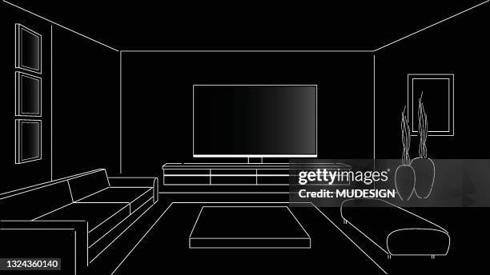
Reference · supplied by Petr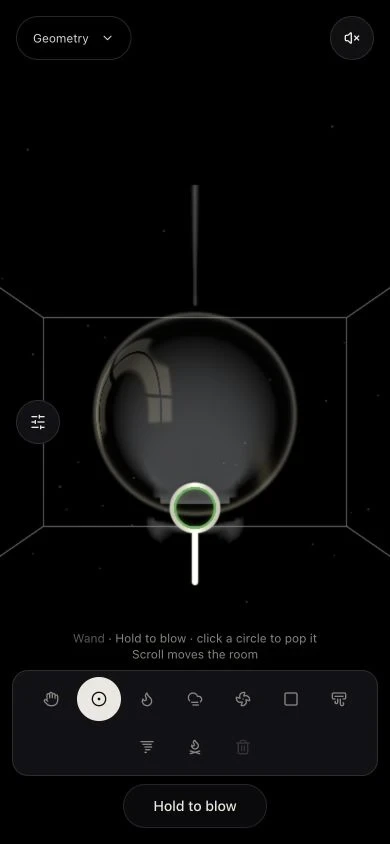
Before · the misinterpretation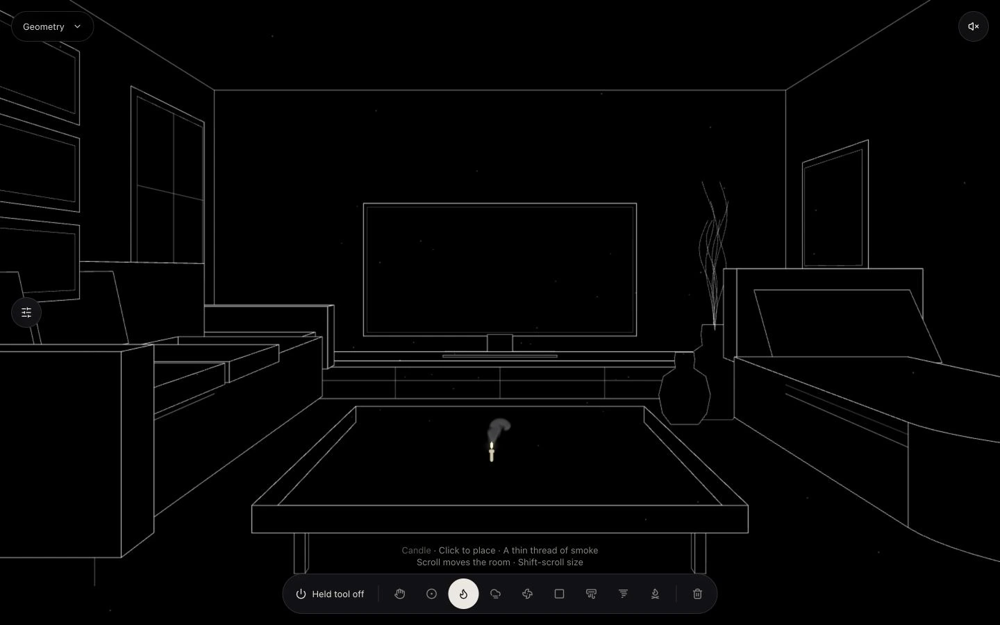
After · furnished contours at 1440 × 900
Sees: A furnished architectural drawing. Black surfaces, fine white outlines, framed window panes, a sofa and low table, a TV console, a curved chaise and two vessels with spare stems. The supplied stock reference is not used as the background; the scene is original geometry.
Taps: Begin. Candle is already selected and sound is off. Click places an active candle; “Held tool off” leaves that candle emitting.
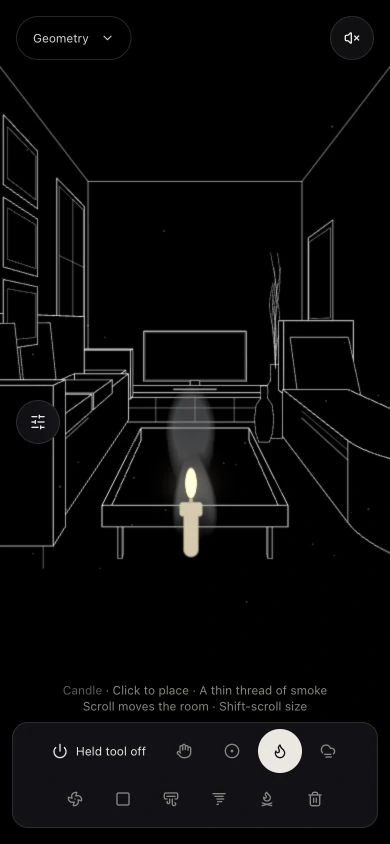
Phone · placement checked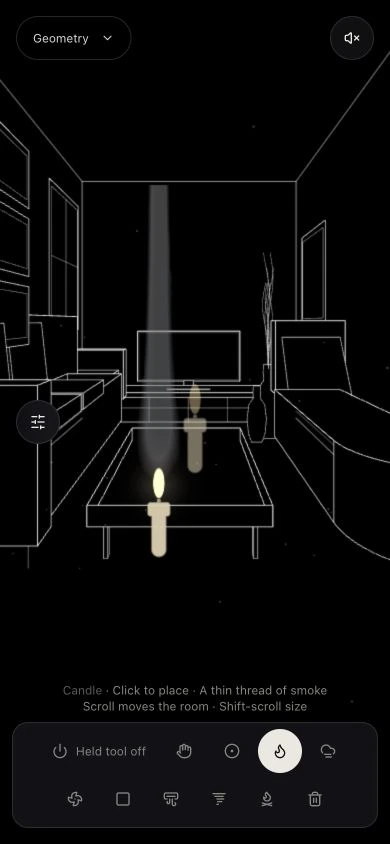
Scroll · contours move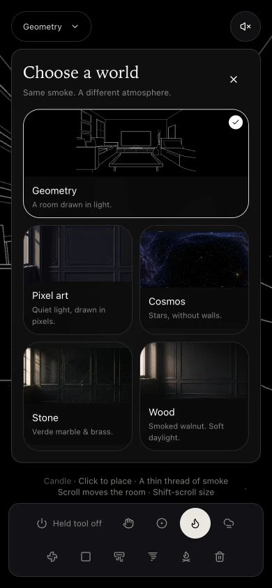
Picker · matches the sceneSees: The phone layout keeps furniture visible and the TV horizontal. Geometry's thumbnail is drawn from the same model as the room. Wood still renders when selected; switching back restores the contours.
Does: Ordinary scrolling moves the camera. The old smoke solver, bubble dynamics and corrected round-bubble projection continue unchanged.
Could get stuck: Furniture is part of the visual background; it does not become a smoke obstacle. Use the existing Block tool for that. The held-off candle preview remains dim at the pointer. Hardware trackpad feel and overall frame rate were not benchmarked.
Five frictions → fixed in this build
- A wire box instead of a room. → Furnished perspective composition matching the reference's subject.
- Too little readable detail. → Cushions, tabletop and legs, console divisions, wall frames, vessels and stems.
- The background's visual language was wrong. → Thin white contours, black surfaces and outlined window panes.
- Narrow screens lose the composition. → Reframed furniture and a landscape TV. The inspection also corrected obscured vases.
- The picker showed a different scene. → A complete, uncropped preview generated from the actual contour drawing.
All five are present in local revision 26efd61. 31 focused tests, production build, typecheck, scoped lint and smoke-preservation check pass. Browser error/warning log was empty.
The contour image is cached while the camera is stationary; a regression verifies one upload across 600 frames and release of old images on resize. See validation and updated brief. The changes are committed locally and ready to open without additional setup; they have not been pushed or deployed.
Earlier walkthroughs follow. Their screenshots show previous Geometry backgrounds and are retained as history.
12 October: round bubbles, quiet start
Local code revision 3aa5022 · 390 × 844 and 1280 × 720
“Make sound off by default”
“I think you broke the bubbles”
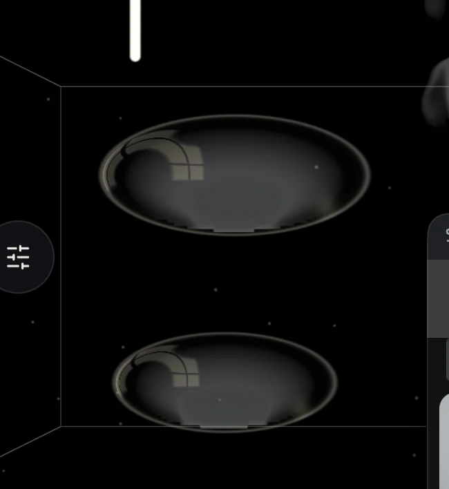
Before · reported distortionAfter · round and mutedSees: Sound is off on every fresh load. The sound button says “Unmute”. Geometry bubbles stay circular on narrow screens.
Taps: Begin, choose Wand, hold to blow. Unmute enables sound; Mute turns it off again.
Cause and fix: Room width and height independently stretched the simulation plane. The failing regression reproduced a 3.14:1 bubble at 390 × 844. One shared scale now aligns the shader, fluid image and pointer mapping. Bubble dynamics, smoke settings and accepted ray functions were not changed.
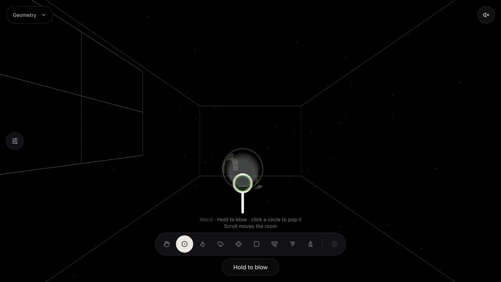
Desktop · same proportionsVerified in the running app at desktop and 390 × 844. Default mute and both toggle directions checked; no console errors. All 29 focused tests, typecheck, scoped lint, preservation check and production build passed. The five earlier walkthrough fixes below remain in place. Follow-up validation.
1. Open → Begin with a candle
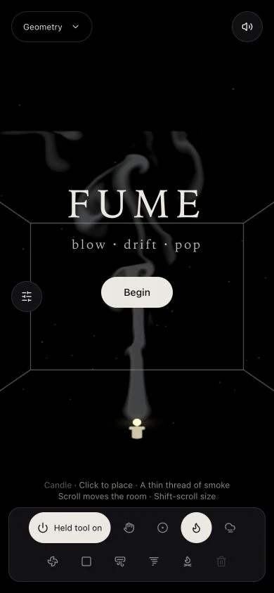
New visitor · Geometry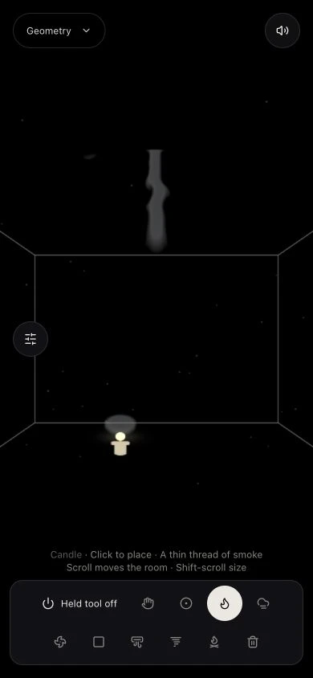
Begin · tools visibleSees: The default is a black room with white outlines, including the window. Candle is selected; its held effect is on. There is no pre-placed shelf or collection of bubbles.
Taps: Begin clears the title. Returning visitors get their chosen background after loading.
Could get stuck: The 11 October images below predate the projection correction. The 12 October follow-up above fixes the widened devices and oval bubbles; all styles now keep equal scale on both axes.
2. Click → leave an active candle
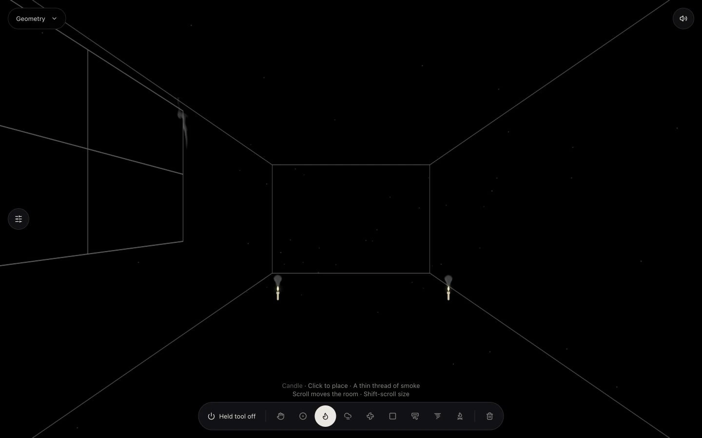
Placed tools remain active
Sees: One “Held tool on/off” switch. No Follow/Pin choice.
Taps: Click anywhere to place a copy. Switch the held tool off: the placed candles keep emitting. Click again to place another active copy. Hand moves existing tools; Wand still blows and pops circles.
Could get stuck: The icon meanings still rely on their short hints. On a phone all controls wrap into two reachable rows. The held-off pointer preview stays visible and dim so placement is predictable.
3. Two fingers → move the room
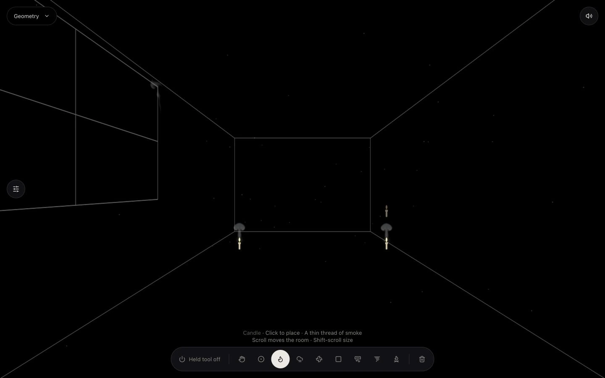
Scroll pans the room
Sees: “Scroll moves the room” under the current tool.
Does: Ordinary horizontal and vertical trackpad scrolling moves the camera with any tool selected. Shift/Alt deliberately adjust tool size or aim. Ctrl/Meta scrolling is left to native zoom. Hand drag remains available.
Could get stuck: Automated browser scrolling proves the event route and visible camera response. It does not measure the feel of Petr's physical trackpad. Photo environments have bounded pan, rather than unrestricted travel through a reconstructed room.
4. Background button → five distinct worlds
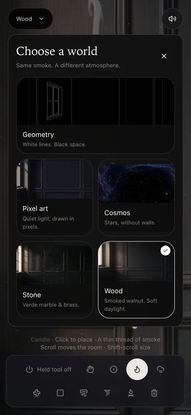
One-tap visual choice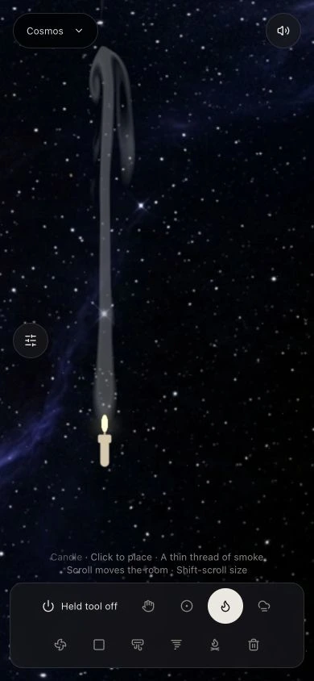
Cosmos · phone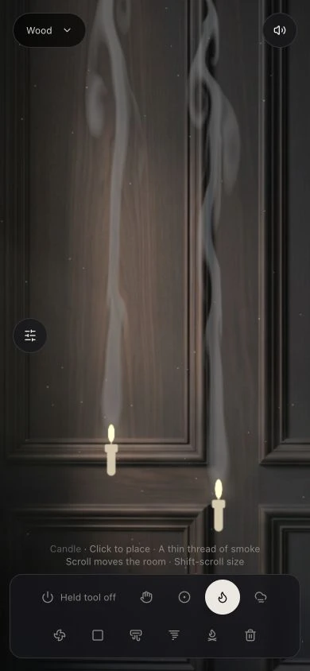
Wood · phoneSees: Geometry, Pixel art, Cosmos, Stone and Wood directly on the canvas. No lab scrolling is needed to find them.
Taps: A card changes the background and closes the picker. It preserves smoke settings. Reload retains the chosen style. The simulation lab still contains the original presets, scenes, moods and forest options.
Could get stuck: The photographs and pixel artwork are composed images with gentle camera movement. They are not measured wood/stone PBR maps. Generated originals and exact dimensions are retained for inspection.
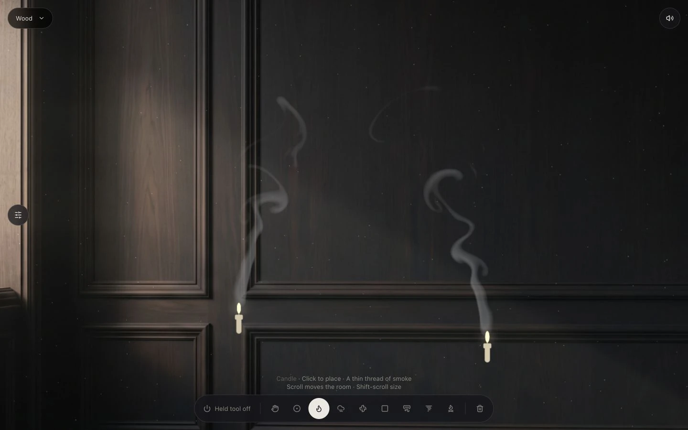
Wood · shallow wall and light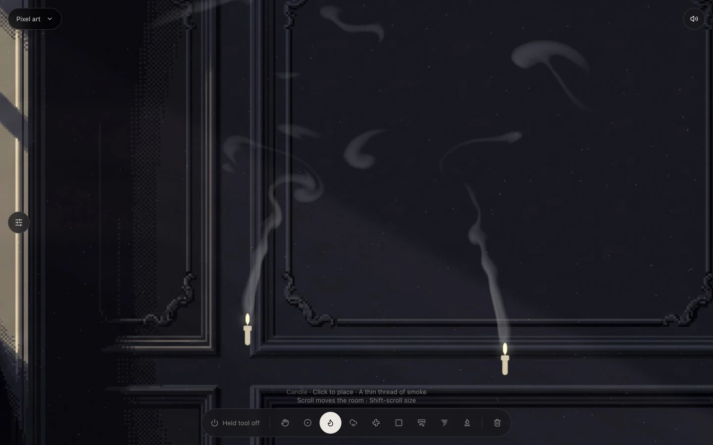
Pixel art · its own drawing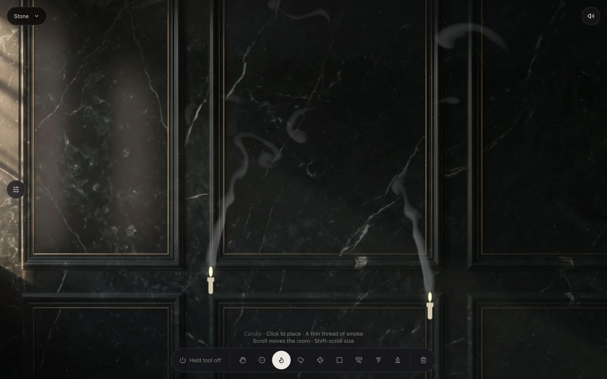
Stone · restrained mineral detail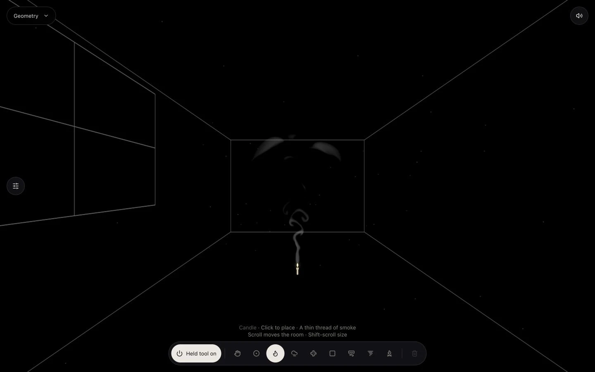
Geometry · default5. Repeated tiles → the reference's composition
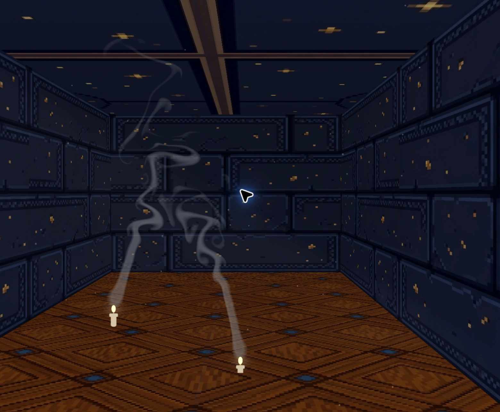
Before · rejected tiled corridorNow · composed empty wallThe earlier approach treated the complaint as insufficient texture detail. That was wrong: the depth, busy floor, repeated panels and scale were also wrong. This pass uses the actual FUME reference to generate empty background compositions. Smoke, tools, bubbles and the accepted rays remain live.
Geometry stays the explicitly requested default. The other room styles follow the image's intimate framing. No claim that the original interactive smoke now equals the still image's photographic smoke is made.
Five frictions → changes in this build
- Wrong composition despite richer tiles. → Shallow, reference-conditioned room images replace the tiled corridor in Pixel art, Stone and Wood.
- Styles hidden in the lab and hard to compare. → A visible image picker with five clearly named worlds and mobile sizing.
- Hand on entry; Pin confused placement and emission. → Active Candle on entry, click always places, one independent held-effect switch.
- Trackpad scrolling changed the effect. → Plain two-axis scrolling pans; explicit modifiers adjust tools.
- Saved styles produced reload errors; failed assets stayed failed. → Shared initial markup, saved settings loaded before start, bounded asset retries, stale-result protection, cached textures and image pan that keeps every visible edge inside the smoke field.
| Step | Before | Now |
|---|
| Open | Hand and seeded tools | Candle, held on, empty Geometry |
| Place | Follow/Pin modes | Click always places; emission toggle independent |
| Move | Wheel changed depth or device | Ordinary scrolling pans |
| Choose a look | Busy repeated materials inside a deep box | Distinct composed environments and direct image picker |
| Return | Saved-style hydration mismatch | Restored style with identical initial markup |
Evidence, generation and practical limits
The production build, 28 focused tests, typecheck, scoped ESLint and the preservation guard passed. All five styles rendered in the local browser; the five phone picker images loaded, Wood and Cosmos survived reload, and no new shader or JavaScript errors appeared in the final walkthrough. Independent review found and fixed panned-edge emission and stretched-image-border bugs. See validation output.
The original solver, numerical settings, smoke shader helpers and frame timing are protected by a source comparison against 1864ab7. Startup/tool behavior and image pointer mapping are explicit exceptions. The accepted window_mask and volume_light functions remain byte-identical. No second renderer or fluid engine was added.
Art route: Gemini on the confirmed msuorange Google AI Pro account; explicit user permission covered the FUME reference upload. Provenance records actual model evidence, dimensions, originals and prompts. Generated images are appearance assets, not calibrated material scans. The unfunded Higgsfield batch submitted zero jobs and charged zero credits.
There is no admin screen or live deployment to verify. The only manual acceptance is Petr deciding whether the composition now feels right. Frame rate has not been benchmarked, and no claim of fixing every inherited behavior is made. The full inherited test runner has missing export-template dependencies and is not claimed green.
Read the interpretation audit, all 23 original Grok messages, and the corrected visual brief. Capture steps are in capture.cua.js. The saved contour reference is Hairline, @speedy_devv, found offline in the Jev archive. The YouTube dual-color experiment remains parked after the rejected rewrite.
From Petr: no setup step; open the local preview. Visual acceptance remains his choice.